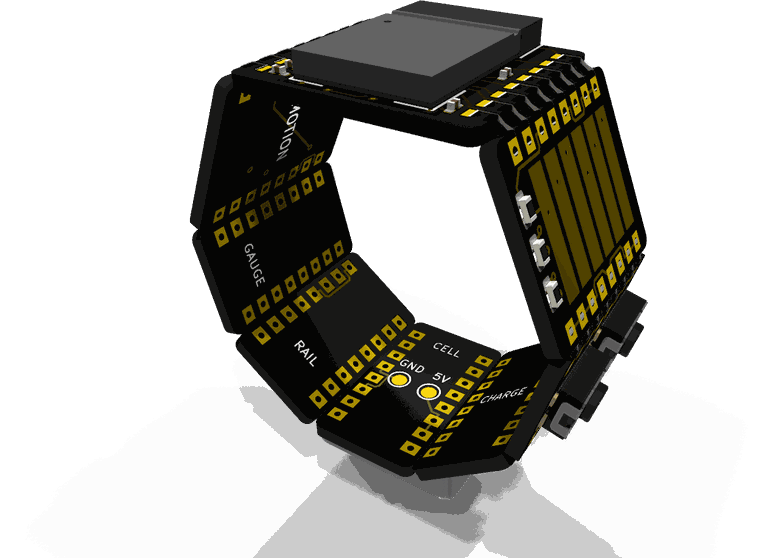
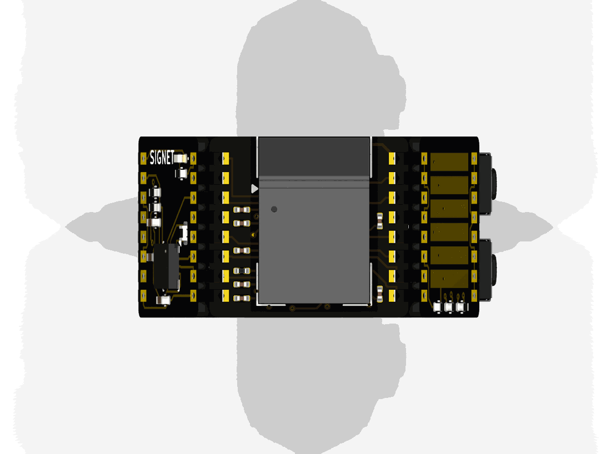

Blog ·
Signet, a mouse worn as a ring of flat boards
- examples
- signet
- geometry
- gyroscope
- capacitive touch
Signet is a computer mouse you wear as a ring on your index finger. It's made of eight small circuit boards that sit around the finger, each one soldered to the next along an edge. Turning your hand moves the cursor, and your thumb scrolls and clicks. We wanted an example of something people can make with Via that's small enough to wear.

Via is our set of tools and checks for AI agents that design boards. We're Team Reagent, the electrical engineers who make Via. We wrote Signet's brief. An AI agent designed every board with Via, and we read through its work, including its checks and its mistakes. The Signet page shows the ring, and its files are in examples/ring-mouse.
Fitting flat boards around a finger
Via makes rigid boards, so the ring is a polygon of flat tiles. Each tile touches the circle inside it at one point, and the corners stick out past the circle. The ring turns a little at each corner, and the turns add up to 360 degrees. More sides give smaller turns at the corners and a smaller bump at each one. Around a 20 mm circle, a regular hexagon's corners stick out 1.55 mm and an octagon's stick out 0.82 mm. The bump shrinks roughly with the square of the number of sides.
The widths come from a rule in school geometry. The two sides that meet at a corner touch the circle at the same distance from that corner. That distance is the corner's tangent length, t. A tile's width is the sum of the tangent lengths at its two corners. Each corner turns the ring by 2 atan(t/R), where R is the circle's radius.
Signet's tiles touch a 20.0 mm cylinder. That leaves room for a 19.4 mm finger inside a 0.3 mm liner. The radio tile holds a Bluetooth module that's 7.99 mm wide once you count its courtyard, the area around a part that other parts have to stay out of. So it's the widest tile, at 13.2 mm, and its two corners turn 66.9 degrees each. Each of the other six corners turns 37.7 degrees.
Turning a hand into cursor motion
Inside a gyroscope chip, a tiny mass on springs vibrates back and forth. Anything moving across a turning surface gets pushed sideways by the Coriolis effect. So when the chip turns, the vibrating mass moves sideways in proportion to the turn rate. Electrodes sense that motion as a change in capacitance. Navid Yazdi, Farrokh Ayazi and Khalil Najafi reviewed sensors like this in "Micromachined Inertial Sensors," a 1998 paper in Proceedings of the IEEE.
Signet's motion tile carries an LSM6DSL, which is an accelerometer and a gyroscope in one chip. The cursor code only reads the gyroscope's turn rate. The motion tile sits 66.85 degrees around the ring from the radio tile, so the firmware rotates each reading back by that angle. After that, turning your hand left or right moves the cursor across the screen. Pointing up or down moves it up or down, and a roll doesn't move it.
A mouse reports motion in counts, small steps that the computer scales into pixels. A gyroscope reads some noise even when it's still, and a resting hand trembles a little. So the firmware treats any rate under 3 degrees a second as zero. Past that dead band, the cursor moves 20 counts for each degree the hand turns.
The cursor only moves while your thumb rests on the scroll strip, and lifting the thumb is like lifting a desk mouse off its pad. Seven host tests check this code on a computer.
A scroll strip read like a three-phase motor
A thumb near a copper stripe adds capacitance, so the stripe holds more charge at the same voltage. The radio's touch controller charges a stripe and then moves that charge into a 10 nF capacitor. It keeps doing this and counts the transfers until the capacitor reaches a set voltage. With a thumb there, each transfer carries more charge, so the count falls.
The touch tile has six stripes, each 1.2 mm wide, with their centers 1.55 mm apart. They're wired A B C A B C. A thumb covers several stripes at once. As it slides, the three channels rise and fall in turn, a third of a cycle apart. The three currents in a three-phase motor follow the same pattern.
The Clarke transform, from power engineering, turns three signals like these into a pair that gives an angle. Edith Clarke of General Electric set it out in "Circuit Analysis of A-C Power Systems," which Wiley published in 1943. The firmware forms 2A - B - C and √3 (B - C), which is her pair scaled by a constant. The angle of that pair gives the thumb's position within one cycle of three stripes, a span of 4.65 mm.
Each quarter cycle, 1.16 mm of travel, is one scroll step, the same as one click of a mouse wheel. A touch starts when the three signals add up to 120 counts and ends when they fall below 80. The gap between those two numbers keeps a thumb sitting right at the threshold from flickering on and off. Eight host tests slide a modeled thumb along the strip.

How the design went
Our first ask said "a compact board," so the agent drew flat boards. It drew the face of a signet ring, 22 mm across with 45 parts, and then a flat board shaped like a ring. We stopped both, because the circuit belongs on the ring's surface. Via's process now has the agent state a product's form before it writes the first design file.
The versions came out of a loop. On each pass the agent judged the last version against a checklist and then made the next one. It turned every face black in v0.2, and in v0.3 it moved the status light out from under the thumb.
On the third pass the agent measured the assembly and found an error in every assembly picture. The radio tile's two joints were 1.3 mm open, and the pictures showed their solder floating in the air. Every tile had been placed touching the finger at its middle. Next to a wider tile, that breaks the tangent rule. The agent had taken the gap for the shape of the solder.
In v0.4 it closed the ring. Since then ring.py stops if two neighboring tiles miss their shared corner by more than 0.005 mm. Signet's loop had no fresh reviewer, and Via's loop skill now adds one.
For v0.5 we asked for more sections to make the ring smoother. Each extra tile makes the turn at each corner smaller, and it also leaves each tile less room. With eight tiles, the five small ones are 6.83 mm wide. Nine would bring them down to 5.8 mm, which is too narrow to fit a SOT-23 package between two joints.
The agent's first radio tile was 12.7 mm wide. Every courtyard fit, but the routing software left 18 links open. The capacitors on that tile are 0.6 mm long, and there was no room next to them for vias, the plated holes that would connect them down to ground. On the 13.2 mm tile the agent put filled vias inside the capacitors' pads. It wrote the last short links into the design file itself.
In v0.5 all eight tiles pass the wiring and copper checks and the fab file export. The radio tile still has two warnings, because the module's printed outline runs past the edge of the tile. The gauge tile halves the cell's voltage so the radio can read it. Its simulation stayed inside all three of its limits in 52 runs across the parts' tolerances.
What is open
Nobody has ordered a Signet. The firmware folder has the scroll decoder and the air mouse, with no Bluetooth code yet, and neither one has run on a ring. The radio module's hookup hasn't been checked against ST's datasheet. ST tuned the antenna for free space, and nobody has measured its range on a hand. The cell holds about 20 mAh, and the ring's current draw hasn't been measured. The cell's pouch sticks out 1.6 mm past its tile. Nobody has tested how strong the solder joints are. The v0.5 README lists every open item.
Next we'd like to try a cell that fits inside its tile. Then we want to order a first ring and measure it on a hand.